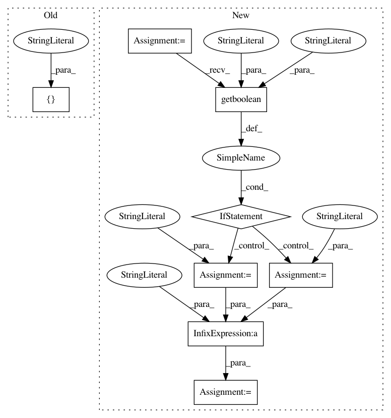

dc12fb43b73c641012b53ffcba80a1f4987ba9cc,GPy/kern/parts/rbf_inv.py,RBFInv,weave_psi2,#RBFInv#Any#Any#,265
Before Change
//include <omp.h>
//include <math.h>
weave.inline(code, support_code=support_code, libraries=["gomp"],
arg_names=["N", "num_inducing", "input_dim", "mu", "Zhat", "mudist_sq", "mudist", "inv_lengthscale2", "_psi2_denom", "psi2_Zdist_sq", "psi2_exponent", "half_log_psi2_denom", "psi2", "variance_sq"],
type_converters=weave.converters.blitz, **self.weave_options)
After Change
else:
inv_lengthscale2 = np.ones(input_dim) * self.inv_lengthscale2
if config.getboolean("parallel", "openmp"):
pragma_string = "//pragma omp parallel for private(tmp)"
else:
pragma_string = ""
code =
double tmp;
%s
for (int n=0; n<N; n++){
for (int m=0; m<num_inducing; m++){
for (int mm=0; mm<(m+1); mm++){
for (int q=0; q<input_dim; q++){
//compute mudist
tmp = mu(n,q) - Zhat(m,mm,q);
mudist(n,m,mm,q) = tmp;
mudist(n,mm,m,q) = tmp;
//now mudist_sq
tmp = tmp*tmp*inv_lengthscale2(q)/_psi2_denom(n,q);
mudist_sq(n,m,mm,q) = tmp;
mudist_sq(n,mm,m,q) = tmp;
//now psi2_exponent
tmp = -psi2_Zdist_sq(m,mm,q) - tmp - half_log_psi2_denom(n,q);
psi2_exponent(n,mm,m) += tmp;
if (m !=mm){
psi2_exponent(n,m,mm) += tmp;
}
//psi2 would be computed like this, but np is faster
//tmp = variance_sq*exp(psi2_exponent(n,m,mm));
//psi2(n,m,mm) = tmp;
//psi2(n,mm,m) = tmp;
}
}
}
}
% pragma_string
weave.inline(code, support_code=self.weave_support_code,
arg_names=["N", "num_inducing", "input_dim", "mu", "Zhat", "mudist_sq", "mudist", "inv_lengthscale2", "_psi2_denom", "psi2_Zdist_sq", "psi2_exponent", "half_log_psi2_denom", "psi2", "variance_sq"],
type_converters=weave.converters.blitz, **self.weave_options)
In pattern: SUPERPATTERN
Frequency: 4
Non-data size: 8
Instances
Project Name: SheffieldML/GPy
Commit Name: dc12fb43b73c641012b53ffcba80a1f4987ba9cc
Time: 2013-10-15
Author: nicolo.fusi@gmail.com
File Name: GPy/kern/parts/rbf_inv.py
Class Name: RBFInv
Method Name: weave_psi2
Project Name: SheffieldML/GPy
Commit Name: dc12fb43b73c641012b53ffcba80a1f4987ba9cc
Time: 2013-10-15
Author: nicolo.fusi@gmail.com
File Name: GPy/kern/parts/linear.py
Class Name: Linear
Method Name: dpsi2_dZ
Project Name: SheffieldML/GPy
Commit Name: dc12fb43b73c641012b53ffcba80a1f4987ba9cc
Time: 2013-10-15
Author: nicolo.fusi@gmail.com
File Name: GPy/kern/parts/linear.py
Class Name: Linear
Method Name: dpsi2_dmuS
Project Name: SheffieldML/GPy
Commit Name: dc12fb43b73c641012b53ffcba80a1f4987ba9cc
Time: 2013-10-15
Author: nicolo.fusi@gmail.com
File Name: GPy/kern/parts/rbf.py
Class Name: RBF
Method Name: weave_psi2